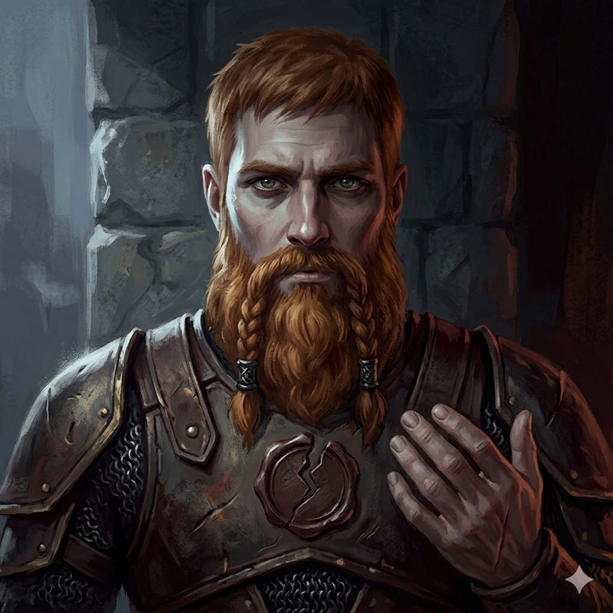

ᚱ
ᚦ
ᚢ
ᛟ
La Orden del Tabernero Errante presenta
KONR
La Torre del Umbral
"Vatnaborg cayó. Todos dicen que fueron los orcos.
Konr sabe que fueron sus manos."
Ascender
Editar Mazo
Nuevo run (resetea progreso)
Prototipo — Piso 1 · El Eco de Valdra
Cicatrices acumuladas:
0
KONR · Early Prototype · v0.1
Constructor de Mazo
Mazo de Konr
Cartas:
0
/ mín. 50
← Volver
Guardar y Jugar
Cartas disponibles — hacé click para agregar al mazo
Todas
Ataque
Habilidad
Poder
Memoria
Maldición
Tu mazo actual — click para quitar
Resetear al mazo base
Vida
70 / 70
Cicatrices
0
Oro
🪙 0
Progreso
0 / 7
Región de Fornheim
El peregrinaje de Konr
← Menú
REGIÓN DE FORNHEIM
🪙
El Mercader Errante
"Una hoguera, un carro, monedas de cobre. La Orden del Tabernero no pregunta cómo conseguiste el oro."
Oro:
0
CARTAS A LA VENTA
RELIQUIAS
SERVICIOS
🪙 100 — Mejorar una carta
🪙 75 — Eliminar una carta
🪙 +25 — Vender una carta
Seguir camino
Elegí una carta
Cancelar
🏛
Ruinas Olvidadas
Polvo y silencio. Algo brilla entre las piedras.
Irse sin nada
❓
Encuentro
Algo cruza tu camino...
🔥
Mjölby
Konr se sienta junto al fuego.
❤
Descansar
Curar HP
🚶
Seguir camino
No descansar — guardar el lugar para después
← Mapa
Vida
70/70
🛡 0
Cicatrices
0
Oro
🪙 0
COMBATE
—
Íthyr
3/3
👻
🛡
0
Eco de Valdra
"La Mentora Caída"
60 / 60
Intenta: Golpe del Umbral (9)
Escudo: 0

Konr Valdmaren
"El hombre que partió el sello.
El que no puede morir."
🛡
Escudo activo
0
Absorbe daño
antes de tu vida
Jugá cartas para atacar o defenderte.
El eco de Valdra te mira. Recuerda.
Tu mano
Mazo: 10
Descarte: 0
Terminar turno →
Elegí una carta para tu mazo
"Cada cicatriz es también una herramienta."
Rechazar — no necesito nada
Victoria
Nueva Cicatriz
Continuar
Menú principal
0
◀ Historial
Historial de combate
Limpiar
El combate comienza. Konr asciende.
En tu mazo: 0 / 8
Cerrar
Agregar al mazo